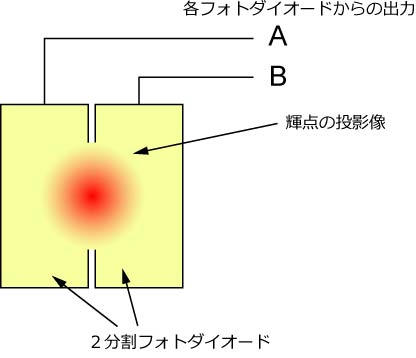
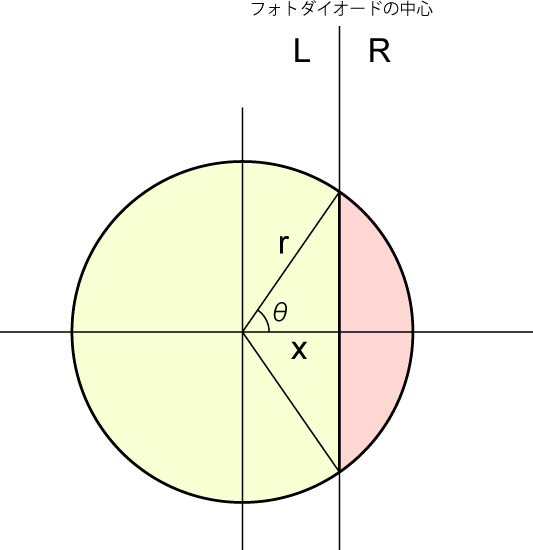
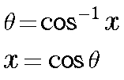
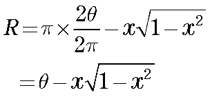
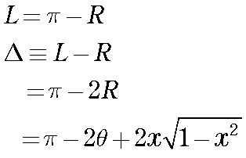

差動出力は二つの方法で求めてみましょう．
結果的には同じになるのですが，このように別々の方法で求めた結果が一緒になると，
気分がいい
のです．
実際のフォトダイオードには次の図のような光が当たります．

ここでは，2分割のフォトダイオードのイメージを載せていますが，4分割でも基本的には同じことです．
さて，ここである近似を使います．それは
フォトダイオード間の溝は考えない
光強度は均一
です．
これら二つの近似は現実を反映していませんが，生物物理ならこの程度でいいのです．
すると，以下の図のように簡単になります．

このL（黄色）とR（赤）の面積の差が，差動出力となります．
まず，赤いところの面積を計算しましょう．
このとき，簡単のため，ｒ＝１，としましょう．
今回はどのようなカーブになるのか，ですので，定量性ではなく，定性的な性質が重要なので，ｒ，の値は何でもいいのです．

ですので，


となります．
それでは，別の解法を説明しましょう．